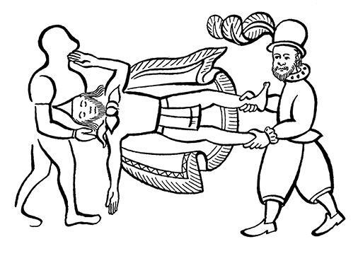
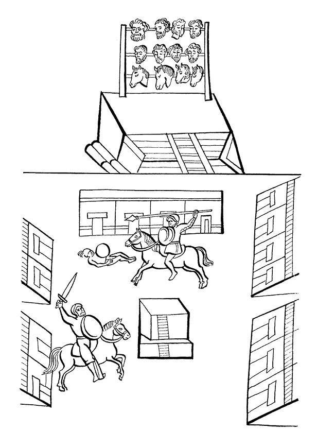
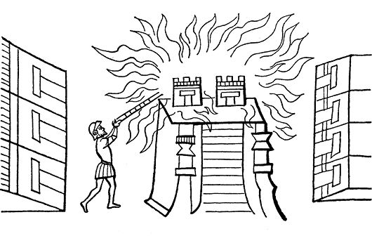
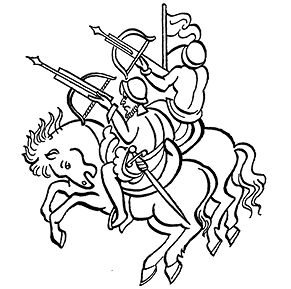

阿兹特克帝国驻华使馆
目录 |
第十二章 西班牙人攻入被围的城里
导 言
印第安见证者对征服者长期包围墨西哥-特诺奇蒂特兰期间所发生的无数事件仍保留着清晰的记忆。这里选录的是萨阿贡实情提供者所写的文本。文本记述了在都城周围和都城中心所发生的每一场搏斗。 在征服者开始的进攻中，有一次墨西哥人俘虏了十五个西班牙人，当着坐船同胞们的面把他们都杀死了。文本还叙述了被围的印第安人的悲惨境况；叙述了西班牙人如何闯入特拉特洛尔克的集市；叙述了神庙如何被焚，以及墨西哥人如何以大无畏的精神抵抗那些企图占领城中心地带的敌人。 接着还叙述了西班牙人如何把弩炮或投石器安装在位于特拉特洛尔克集市广场的小庙上用以攻击墨西哥人。最后还记述了在围攻的末期瓜乌特莫克为了拯救都城所做的最后努力。于此之前，瓜乌特莫克继承了殁于瘟疫的国王古伊特拉瓦克的王位，掌握了墨西哥人的最高权力。瓜乌特莫克国王决定戴上阿乌伊索特尔国王标识，装扮成一个叫作奥博奇特辛的首领样子。这样的装扮能把人变成克查尔猫头鹰，给人以无穷的力量。据说，这种装扮体现了战神维奇洛波奇特利的意志。墨西哥人认为如果有人放射火神的投枪，只要射中一两个敌人，胜利肯定在望。印第安人的文本告诉我们，西班牙人看到克查尔猫头鹰的形象吓得失魂落魄。 战斗结束，城里出现了片刻的寂静，预示着一切都完结了。我们在下一章可以读到，一大片像火一样的东西从太阳出来时就旋涡似的滚动而下，这是墨西哥-特诺奇蒂特兰最后一次出现的凶兆。
十五个西班牙人被俘，被杀后用于祭祀
不久城里一片嘈杂之声，印第安人面对战争不停吹笛，拍打自己并挥舞他们的盾牌，到处追击西班牙人，把他们吓得魂飞魄散。很快他们就捕获了十五个西班牙人，并把他们拖到小船上，然后退到湖中心。 当他们凑足十八个俘虏时就会把他们在特拉克查卡尔科（也叫武器库）杀掉用来祭祀。他们把俘虏的盔甲、棉锁子甲和穿的所有衣物去掉，让他们全身赤裸。这样，他们就变成了祭品，可以用来祭祀了。他们的同胞在湖岸观看他们如何被杀。 一次，在索克蒂特兰划来两艘双桅帆船，西班牙人抛锚后便朝墨西哥人住房所在的地方奔来。当奇拉卡特辛和其他武士发觉后便向他们扑了过去，西班牙人被逼无奈只好跳水逃生。 另一次，西班牙人划船向克尤纳卡克开去，到达后从船上下来几个人，给他们带路的是卡斯达涅达和西克滕卡特里1，后者头上仍戴着克查尔羽毛头盔。 二人中的一个发射弓弩，一个墨西哥人额头被射中，立即倒地身亡。 发射弓弩的是卡斯达涅达，此时墨西哥武士蜂拥而上，对二人穷追不舍，他们只好投水逃命。墨西哥人又向他们投掷石块，卡斯达涅达被砸死，尸体被拖上小船送往索克蒂特兰。  一艘双桅帆船停在城墙背后的拐角处，还有另一船停在特奥特莱科。特奥特莱科有路直通佩农，也叫特佩辛克。两艘船像是护湖的卫士。 夜里，船被西班牙人盗走了，但是过了几天西班牙人又乘船回来向我们进攻。 此时，在通往瓜瓦卡蒂特兰的道路上也出现了情况，特拉斯卡拉人、阿科尔瓦坎人、查尔克人2悄悄来到大道上，他们想填平水道，再修道路和大道连起来。他们往水道里投土砖坯和建房的木构件——房屋的横梁、房梁、木柱，还有附近生长的芦苇等物件，希望把水截住。
西班牙人再次发动进攻
水道填平后，西班牙人小心翼翼地向前进军；队伍前面有军旗引路，有笛手吹笛，鼓手击鼓。 他们的后面是一排排来自各村的特拉斯卡拉人，即所谓的西班牙人的盟友。他们高昂着头颅，用手拍着胸脯，显得十分勇猛。 西班牙人和盟军引吭高歌，墨西哥人也一样，因此到处都能听到歌声。他们唱歌大概是为了驱赶睡意，也为给自己壮胆。 西班牙人过了河，与此同时，墨西哥武士蜷缩着埋伏在地，等待着奋起之时的到来，等待着战斗的命令。 果然一个声音叫道： “墨西哥同胞们，时候到了，冲啊！……” 下令者是特潘内卡奥托米营的艾卡特辛，他向西班牙人扑去，并叫道： “特拉特洛尔克武士们，时候到了！这些野蛮人是干什么的？看他们敢来！……” 接着他把一个西班牙人撂倒在地，用鞭子抽打他；西班牙人向他反扑，把他也打倒在地。但是艾卡特辛再次把西班牙人打翻在地，这时上来一些人将西班牙人拖走。 所有埋伏在地上的墨西哥人全都站起来，在大街小巷追击西班牙人。 西班牙人见到有人追击，个个吓得魂飞魄散。 抓捕俘虏的竞赛开始了，很多特拉斯卡拉人成了战俘。不少特拉斯卡拉人、阿科尔瓦坎人、查尔克人和索契米尔科人俘虏了大批敌人，全都结果了他们的性命。 墨西哥人又在水道上追杀西班牙人和他们的盟友。 道路变得泥泞不堪，无法行走。人们只能踉踉跄跄、连滚带爬地前进，俘虏就这样被带走了。 战旗就是在这样的大道上被砍倒，被缴获。特拉特洛尔克人最终取得胜利。争夺战旗的地方就是今天的圣马丁。 另一些西班牙人躲过一难，他们撤到通往科尔瓦卡东科的海岸附近，在水道一侧停下来安营。
五十三个西班牙人作为祭品被杀 墨西哥人监视着俘虏的行动，押着他们急速向亚卡柯尔克行进，俘虏们有的哭，有的唱，还有的时不时捂住自己的嘴，就像害怕时经常做的那样。 到达亚卡柯尔克后，他们排成一排，一个个被押上小庙：祭祀将在这里进行。 西班牙人走在盟军前面，墨西哥人首先对他们下了手。 祭祀完毕，他们把西班牙人的头颅和马头都串在横棍上，马头放在下面，人头在上，所有头颅都朝向太阳。 但是西班牙人盟军的头和远来的俘虏的头都没被串上。 一共串了五十三个西班牙人的头和四个马头。 到处都在戒严，但仍有战斗。索契米尔科人乘小船从各地赶来。到处都有人被俘，到处都有人死亡。  西班牙人的头颅和献祭的马匹（佛罗伦萨抄本）
被包围者的惨景
我们墨西哥人被围，所有人都很焦虑。大家都忍饥挨饿，有的人已经饿昏。没有干净的饮水，只好喝硝石味很重的水。很多人死于痢疾。 只有壁虎、麻雀、苞谷皮和硝石味很浓的绊根草可吃。还有人嚼着干豆荚、水百合和建筑物中的填充料。大鹿皮烧烤之后也成了果腹之物，连野草和泥土也都被塞进嘴里。 我们被围着，没有比这更苦的了。一切都被饥饿笼罩着。 我们墨西哥人不得不一步步地向后撤，慢慢地都蜷缩在墙下。
西班牙人进入特拉特洛尔克人的集市
一次，四个骑马的西班牙人开进了集市。他们按照以前制定的路线沿集市的围墙前进，见了墨西哥武士挥剑便砍，因此很多人都死在了他们的剑下。整个集市都被捣毁，这是西班牙人第一次撞入集市，接着又原路扬长而去。 墨西哥武士紧追不舍。这次是西班牙人突然闯入集市，墨西哥人对此事先一无所知。
火烧大神庙 与此同时，西班牙人正在放火焚烧大神庙。刚一点火，大庙就着了起来，火苗升腾，直冲云霄。大火燃烧时发出的噼啪声响彻天空。 看到大神庙被烧，墨西哥人大喊大叫，哭声震天，嘴里还和同伴们念叨着什么。他们知道，大神庙被焚后，抢劫马上就要开始了。  大批西班牙人来到集市与墨西哥人展开了长时间的战斗。战斗从集市边缘开始，卖石灰的地方就连城墙也都被捣毁了，但西班牙人通过卖熏香的地方冲进花房和卖甜水螺的地方，在那里占领了房屋与房屋之间的护墙。 墨西哥武士仍守卫着城墙和柯楚兰的居民房，那里是进入集市的必经之地，房屋护墙像是连成一片。在屋顶平台上也有很多人在守卫。他们不断向敌人投掷石头和梭镖。在柯楚兰所有房屋后墙上都凿有不大的房洞，以防骑马人的追击，或在敌人投掷长枪堵截追杀时，方便墨西哥武士好通过小洞进入房间。
西班牙人入侵其他地方
一次，西班牙人来到阿利亚卡潘。自然，也把那里抢劫一空，又捕捉了很多人，把他们带走。当墨西哥武士见到西班牙人时，便向他们发射利箭，驱赶他们。 那里有一个健硕的墨西哥首领，名叫阿索根辛。他追逼敌人，叫他们释放被俘民众，最后把敌人赶走。这位首领后来也牺牲在那里：敌人给了他一刀，这一刀伤了他的胸腔和心脏，于是他不治而亡。 敌人有的逃跑，有的倒地毙命，但在亚卡柯尔克仍有战斗。西班牙人投掷他们的帕萨多尔。那四个国王排成一排，拦住墨西哥人去路，给西班牙人出主意。3 但是，墨西哥士兵埋伏起来，企图在日落后从后面插入敌人内部。 此时来了几个敌人，爬上屋顶平台，在那里喊道： “喂！特拉斯卡拉人，快到这里与我们会合，这里有你们的敌人！” 西班牙人向伏击者投掷飞镖，于是他们只好逃散。 入侵者大摇大摆开进亚卡柯尔克，那里战斗已经基本停止，但抵抗依然存在，他们没能攻破特拉特洛尔克的阵地，因为他们在河对面站住脚，向敌人发射飞镖，向墨西卡人投掷石块和标枪。 西班牙人无法攻占桥梁，也不能从渡口通过……
西班牙人把弩炮架在特拉特洛尔克的集市上
当时西班牙人将木制的弩炮架在小庙上以便向墨西哥人发射石弹。 正一切就绪准备发射时，很多在阿马萨克的墨西卡人把弩炮围了起来，并对着弩炮指指点点，大家都露出了惊讶的神色。 下面的村民们也在那里注视着，此时西班牙人正在调整弩炮的方向，向他们射击，投出的石弹就像用弹弓投出的一样。 接着西班牙人绕着圈地放射石弹，弩炮像是一个大弹弓，它的护板条仍好好地立在那里。 但是，石弹并没击中印第安人，而是落在他们身后集市的某个角落。为此西班牙人内部像是争吵起来。他们还不断用手指点墨西卡人，吵吵嚷嚷。 木制的弩炮继续转着发射石弹，没有明确的目标，以极慢的速度调整发射的角度。接着人们看清了它是什么东西：它的顶端是一个投石装置，用粗粗的绳索系在这个装置上，为此人们为其取名“扭力弹簧投石器”。 西班牙人和特拉斯卡拉人又一次退却了，印第安人再一次在亚卡柯尔克、德克潘卡蒂特兰、卖熏香的地方一字排开。在阿克克莱坎敌军首领率部从陆路过来向我们逼近。
墨西卡人的反击
在墨西哥一方，武士们排好队，准备自卫。他们都是体魄健康、器宇轩昂的好男儿，没有一个娇滴滴的胆小鬼。这时他们叫道： “武士们，快到这儿来！那些小蛮子都是些什么东西？他们只是阿纳瓦克南边的一撮乌合之众。” 武士们从不走直路，也不在一地停留，而是不断来回穿行。 西班牙人则不断把自己伪装起来，以便不让人识别出他们的本来面目。他们穿着和本地人一样的服装，佩戴战徽，上身穿着棉披肩以迷惑敌人。由于穿着和墨西哥人完全一样，墨西哥人往往不知所措。 当西班牙人向某个人射箭的时候，那些四处奔跑的人便都匍匐在地。他们急切地注视着箭是从上面何地发射过来的。特拉特洛尔克人也十分警觉，十分机敏地躲避敌人。 但是，西班牙人则不断前进，向有房子的地方步步紧逼。在通往阿马萨克的道路旁，卖熏香的地方，他们的盾牌都快碰到了我们的人，我们的人都快碰到他们的投枪。
“克查尔羽毛猫头鹰”的所作所为
此时，国王瓜乌特莫克正在和克尤瓦瓦特辛、特米洛特辛、潘特莫克特辛、瓦利托克特辛、米斯科克阿特莱罗特拉特辛、特拉古辛、特拉乌特辛等开会。他们找来一个名叫欧珀特辛的伟大首领，他过去曾是个染匠，给他穿上绘有克查尔羽毛的猫头鹰服装，这种服装是阿乌伊索特辛国王的象征。 国王瓜乌特莫克对他说： “这种服饰是伟大的首领、我的父王阿乌伊索特辛的象征，你穿上它吧，你应该穿上它去战死疆场。这种服饰可以吓退敌人，可以歼灭他们。让我们的敌人看看他吧，他们会吓死的。” 人们帮他把衣服穿上，他变得让人惊异，令人害怕。众人安排四个首领陪伴他，保护他。人们还给他配上巫师的标记，这就是：一个绑在木棍尖端的燧石制的长飞镖。 就这样，人们把他打扮成了一个墨西哥的王子。 这时军队统领4特拉古辛高呼： “墨西哥人，特拉特洛尔克人，你们听着： 墨西哥土地上的坏东西没什么了不起！墨西哥民族永存！你们都知道，用克查尔羽毛装饰的猫头鹰服饰体现了战神维奇洛波奇特利的意志，将它投向敌人，因为它象征火蛇，射手一直将火蛇射向我们的敌人。 墨西哥武士们，用弓箭向敌人射击，你们在实现维奇洛波奇特利的意志，很快你们就会在敌人活动的方向看到很多利箭。你们不要随便乱放箭，要把箭射在敌人身上。如果一个箭矢击中一个或两个敌人，我们还有一些时间转战其他地方。现在我们就听从我们主人的安排吧！……” 很快装饰克查尔羽毛的猫头鹰上来了，这时羽毛似乎怒立起来。当我们的敌人见到它的时候，就像一座小山轰然倒塌，个个吓得魂飞魄散，好像他们从这头猫头鹰上看到了别的什么东西。 猫头鹰登上房顶平台，我们的另一些敌人看到了他，很快地回来准备向他攻击，但是猫头鹰再次使他们退却。这时猫头鹰拾起平台上面的羽毛和黄金，然后走下平台。他没有死。敌人非但没保住羽毛和黄金，反而还有三名战士被俘。 战斗一下子平静下来，再没有战事发生。敌人逃跑了，整夜平安无事。 第二天，仍旧平安无事，没有人说一句话。墨西卡人仍在阵地上防守。西班牙人则无任何动静，待在他们的阵地上，不时观察着墨西卡人的动静，没采取任何行动，只是有些人在期待着什么……5  |
|---|